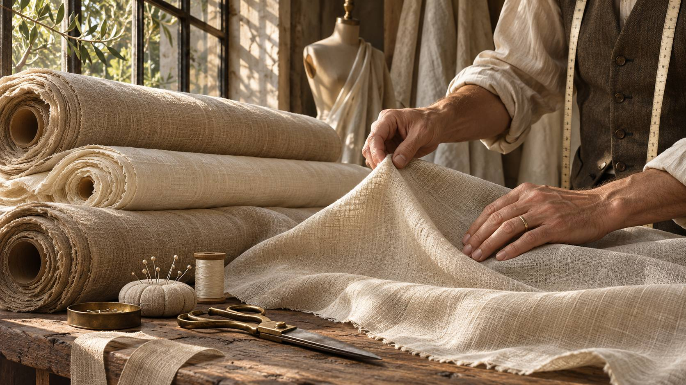

Proporción
Revisamos hombros, largos y volúmenes durante las pruebas de cada prenda.
El estudio ASTRO
Un guardarropa de líneas depuradas, construido alrededor del tacto, la caída y el gesto cotidiano.

Nuestra historia
ASTRO nació de un pequeño perchero en Madrid. Reunía una camisa blanca, un pantalón de pinzas y un abrigo prestado. Al probar cómo convivían esas piezas, encontramos el punto de partida de la marca.
Desde entonces trabajamos en series cortas y ajustamos cada patrón con el movimiento del cuerpo en mente.
Lo que guía el diseño
Revisamos hombros, largos y volúmenes durante las pruebas de cada prenda.
Buscamos fibras que aporten textura y caída a cada silueta.
Los colores y cortes dialogan con prendas de temporadas anteriores.
Cada ficha incluye instrucciones para cuidar el tejido en casa.
Materiales y proceso
Probamos cómo se comporta el lino lavado, cómo cae la lana y cuánta estructura aporta el popelín. Cortamos una primera muestra, corregimos el patrón en movimiento y afinamos costuras, cierres y acabados antes de cerrar la edición.

«Me gusta cuando una prenda encuentra su sitio desde el primer día y sigue ahí años después.»